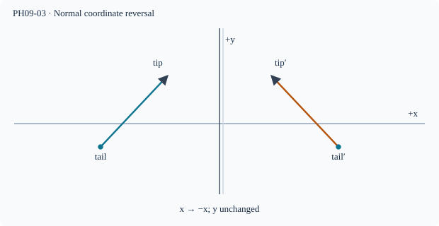

Prerequisite bridge
PH09-02
Before starting, identify the reference frame, directed rays, units and applicable geometric assumptions. Unbound prerequisites remain provisional.
Connected textbook foundation (preserved from PR #5)
4. Lateral inversion depends on the chosen axes
A plane mirror reverses the coordinate direction perpendicular to its surface in the geometric transformation from object to image, not every left/right direction in the room. The familiar “left-right reversal” language arises from how we compare an image with a person turned around to face us. A mirror behind an object, a mirror to the side, and a rotated mirror require explicit reference axes.
For a face-on mirror in the plane x=0, a point at (x,y,z) has virtual counterpart (-x,y,z). This representation makes the actual transformation precise. It also helps explain why labels printed on a shirt look reversed when compared with ordinary forward-facing writing.
Counterexample: Two observers use opposite coordinate directions. They may label “left” differently, yet the actual geometric mapping across the plane is unchanged.
Build and check the model
Reflection in a plane reverses the coordinate perpendicular to the plane, leaving both tangential coordinates unchanged. For a mirror x=0, (x,y,z) maps to (−x,y,z). An apparent left-right swap arises when comparing a reflected person to a person turned to face you; that rotation is a different transformation. The reflection has determinant −1 and changes handedness; rotations preserve handedness.
Worked anchor
A rightward arrow parallel to a vertical mirror remains rightward in fixed room coordinates. A forward arrow aimed toward the mirror maps to one directed away on the virtual side.
Condition and limiting check
A symmetric word may appear unchanged under certain transformations; always specify viewpoint and axes.
Misconception repair
Do not claim the mirror physically swaps every horizontal coordinate.
Reasoning diagram

Self-check before transfer
For a mirror in the y=0 plane, a point has coordinates (3,−2,5). Give its image coordinate.
Check the reasoning
(3,2,5); only the perpendicular y component reverses.
The next page contains fresh authored transfer, not an examination reproduction.
Source and figure status
Curriculum pointer D8; candidate scope only. Preserved chapter manuscript. An original subtopic-specific SVG is attached above. Scientific figure and teaching-sufficiency reviews remain HOLD.